ПОСВЯЩЕНИЕ ХУДОЖНИКА
Художник существует для того, чтобы быть посвященным вечности.
Автор: Роман Усачев
На мой взгляд, есть только три темы, которые достойны, чтобы по поводу них создавать произведения искусства: тема Бога, познания Бога, тема любви, - отношения между людьми, отношение к Родине, осознание своего преемства, откуда ты вышел.
В Писании есть такое понятие, как Царство Божье. Царство Божье – это нечто неуловимое. Или по-другому можно сказать, Царство Божье – это определенная атмосфера; как написано: «Царствие Божие не пища и питие, но праведность и мир и радость во Святом Духе». (Рим.14:17)

Зачастую вербальных средств недостаточно, чтобы рассказать Ц.Божьем, возбудить жажду по нему, чтобы оно коснулось сердец, чтобы Ц.Божье достигло людей. Ты можешь пытаться рассказывать о Ц.Божьем, а искусство, как мне кажется, имеет такой потенциал, что оно может передать саму атмосферу Ц.Божьего. Не случайно именно музыка используется для поклонения. Или, например, живопись может открыть внутри человека что-то, может произвести на душу такое действие, которое очень трудно описать словами. Также и поэзия, красивая литература и т.п. Т.е. все это способно создать определенное состояние.
M._K._CHyurlyonis - Fuga c-moll VL.219
Любое искусство должно создавать какой-то запредельный трансцендентный опыт. Для того чтобы его создать, к этому опыту нужно приобщиться. Например, как создавались иконы. Считают, что люди писали в иконах то, что они созерцали сами, что они видели сами в общении с Богом. (От редактора: именно так, по всей вероятности, творил первый израильский художник Бецалель.) Если ты сам к этому трансцендентному не был приобщен, то твое искусство будет слишком рациональным. По-моему, искусство должно рождать состояние внутреннего удивления, какого-то раскрытия, человек должен пережить трансцендентный опыт, выходить за пределы своей реальности, - из того, что у него в уме, в быту, в обыденной жизни.
Художник действует сегодня по-разному: есть такое понятие «искусство ради искусства», есть люди, балдеющие от самого процесса. Возникает вопрос, чему посвящен такой художник?
Даже актер, жизнь свою полагающий на алтарь искусства и мечтающий умереть на сцене, ищет всегда сверхзадачи. Если в зале никого не будет, не уверен, захочет ли он умереть на сцене. Его желание, скорее, не умереть на сцене, но произвести своим искусством нечто в сердце зрителя. Для этого ему нужен зритель. Если это ему не нужно, если нет диалога, если это не средство коммуникации, то для чего это тогда надо? Тогда мы имеем дело с психопатом, т.е. с человеком что-то не в порядке. Хотя и такое бывает.
Бывает, что художник посвящён самому процессу. Просто он любуется красками, как масло ложится на холст или что-то такое. Наверное, так бывает, я не знаю. Все таки у любого человека искусства должна быть сверхзадача. Он не просто хочет умереть на сцене, он хочет, чтобы эта смерть отразилась как-то в сердцах людей. Он не просто хочет сам любоваться тем, как подобрал сочетание цветов, но стремится к тому, чтобы это что-то рождало в душе человека.
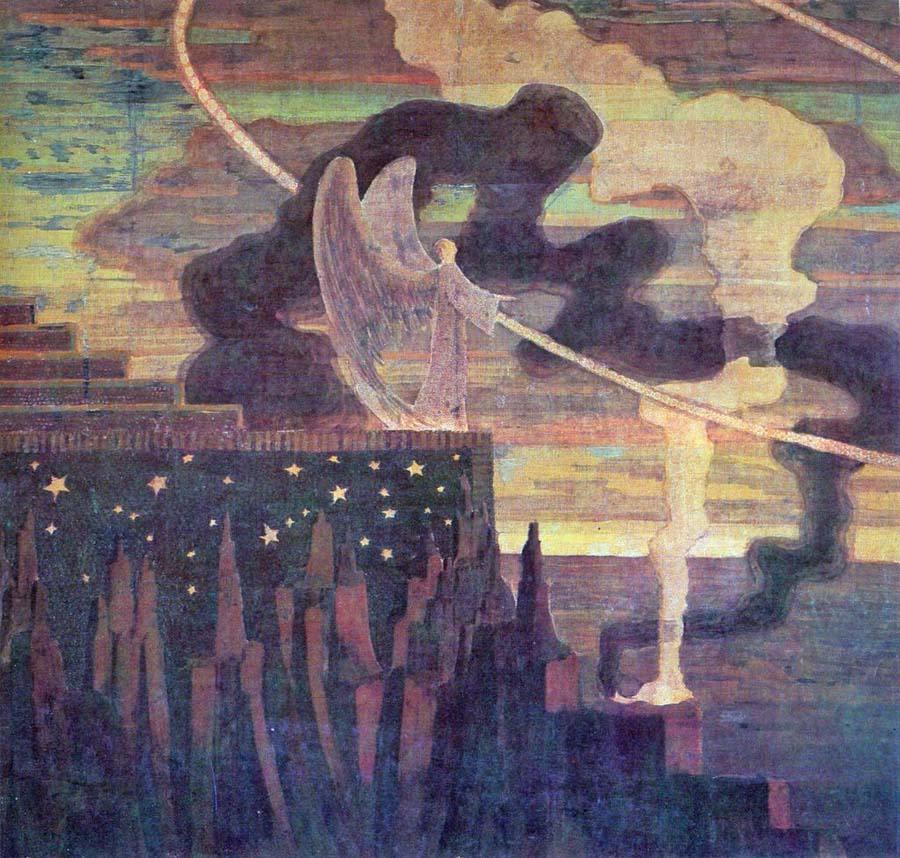
Посвященный художник прежде всего посвящен Творцу.
Почему для меня нет противоречия между посвященным художником и тем, что главным в его жизни должен быть Господь Бог? Потому что, чтобы быть посвященным художником, в определённом смысле, значит быть посвященным Ц.Божьему, либо какому-то другому запредельному опыту - тогда уже злому, негативному.
Мне нравится литература, живопись, мне нравится музыка, которая сообщает мне определенный запредельный опыт. Понятно, что искусство бывает разным. Бывает холодное и очень умозрительное. Или это может быть выраженное самолюбование художника. Может быть поиск чистой формы. Но меня лично торкает, затрагивает именно то искусство, которое дает взгляд за пределы этого мира, которое открывает мне высший, горний мир, этот свет - «солнце правды» (Мал.4:2), который в Боге есть.
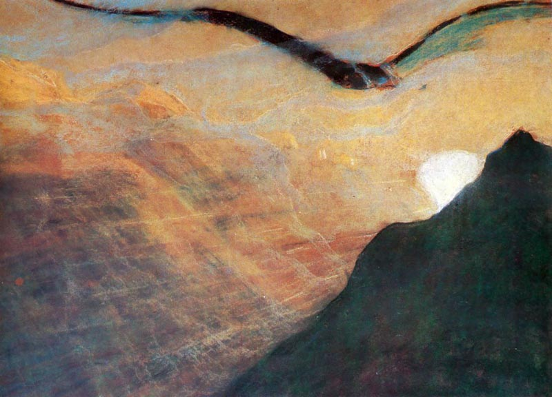
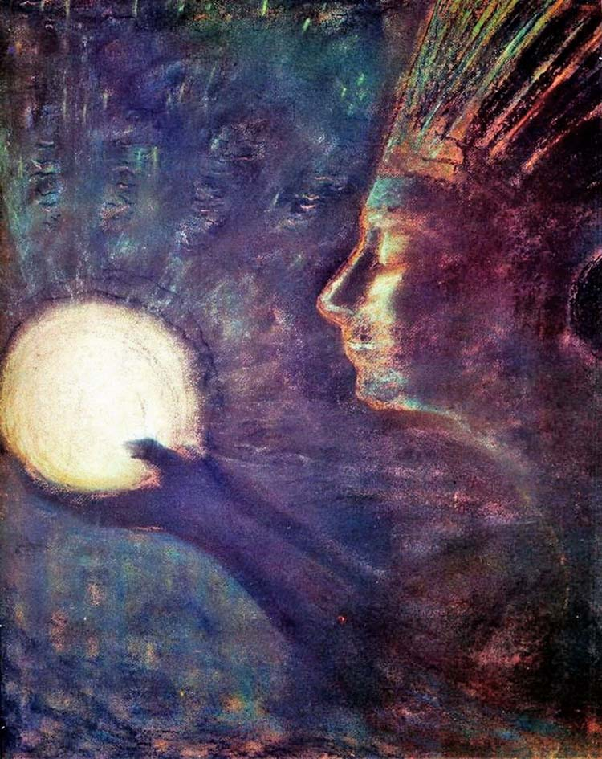
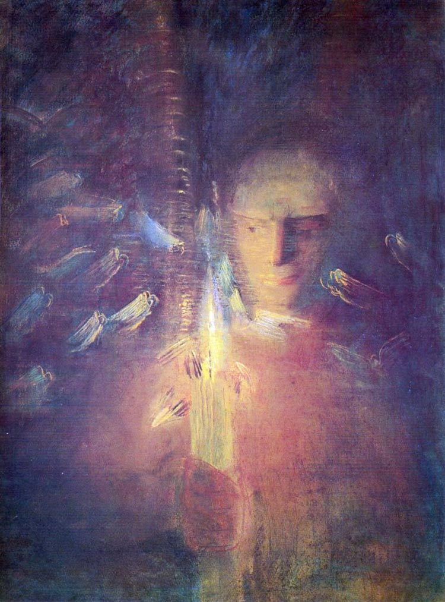
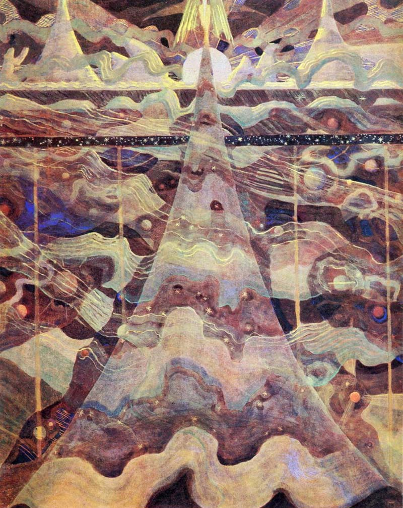
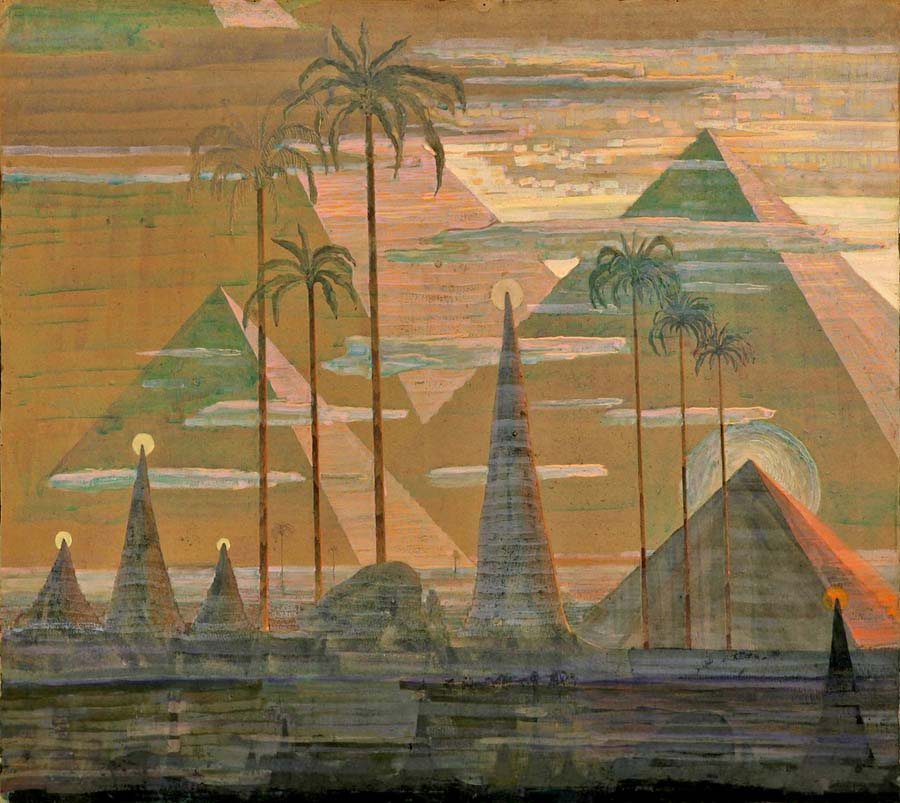
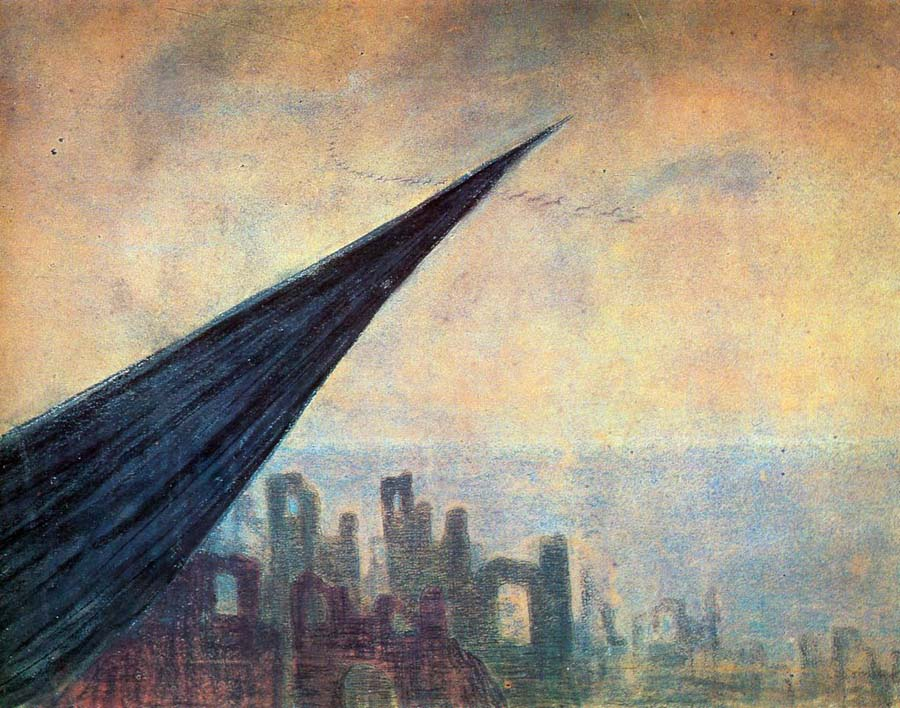
Наверное, кто-то из художников посвящает себя процессу. Но мне кажется, истинное искусство – это не есть посвящение процессу, но посвящение тому, куда этот процесс ведет.
Меня влечет это свет, свет вечности, будущего, того, чего пока еще нет, грядущего мира любви, где Господь царствует над всем. Это свет отражается через что-то в этом мире. Мы можем видеть его отблески в том, как мать относится к своему ребенку, как относятся друг к другу двое возлюбленных, мы можем видеть его через природу, сотворенную Богом и во многом другом. Причем, мы можем видеть все это непосредственно в жизни, когда для нас вдруг открывается любовь к другому человеку, сострадание, милосердие. Но есть некоторые люди, имеющие особый дар, т.е. это не их заслуга, это не их особое качество, это действительно свыше данный дар. Они обладают способностью видеть это более, чем другие, и они обладают средствами искусства, чтобы это показать, открыть это другим через кинематограф, через живопись, через музыку, литературу. Человек может, например, писать сказки, картины, а другой, который с открытым сердцем это будет созерцать, вдруг увидит этот грядущий свет.
И по сути дела, осознано или не осознанно, но художник для того и существует, чтобы быть посвященным этой вечности, этому будущему. Если он пытается просто увековечить себя, просто заработать деньги, если он пытается просто любоваться собой и своими способностями, то я не знаю, чему он посвящен тогда? Стоит ли это того, чтобы посвящать себя этому?
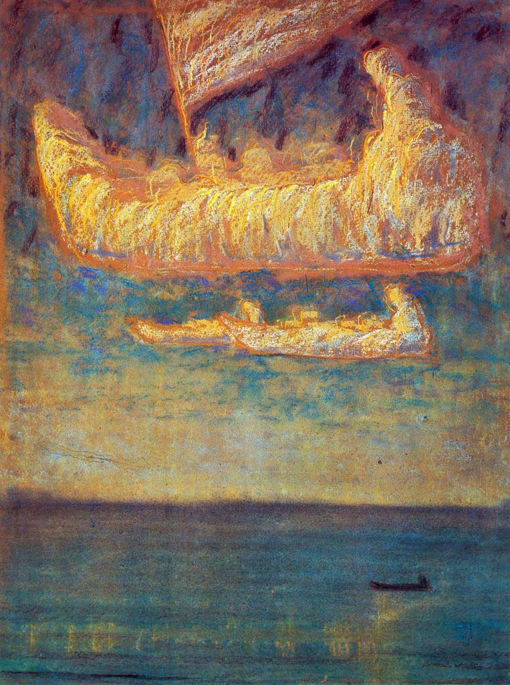
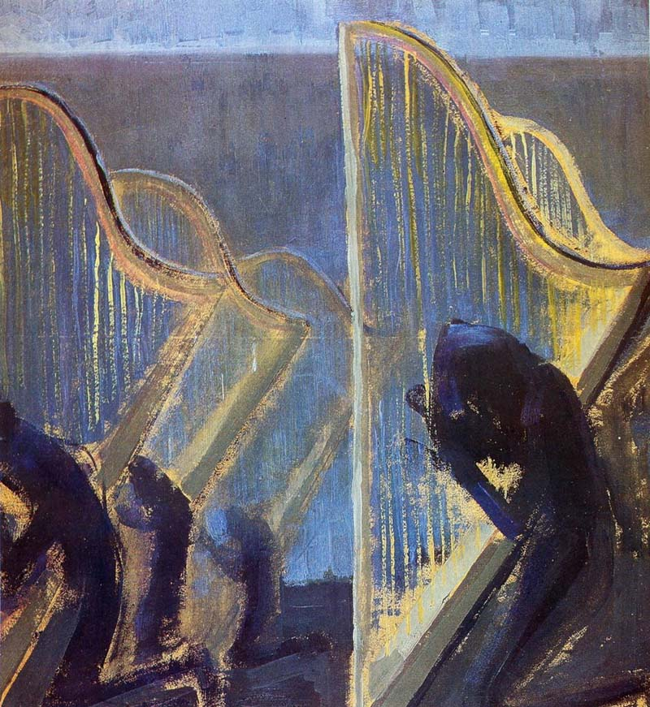
Предназначение художника, на мой взгляд, в том, чтобы он увидел нечто, и чтобы в нем горело желание, чтобы это увидели все. Он видит то, что стоит за обыденным в этом мире. И для него важно, чтобы все это увидели, чтобы были проявлены эти скрытые тайные связи, чтобы увидели это свет, который внутри, который пока еще закрыт обыденностью. И вдруг человек прозревает, начинает это видеть. В этом дар художника. Он посвящен чему-то, что должно произойти в другом человеке. И в этом смысле – это таинство.
Есть, например, попытки так или иначе отразить эту реальность, возникает вопрос, для чего? Но есть другие попытки - показать нечто, увидев которое, человек сам будет преображать эту реальность, т.е. он изменится, станет другим.
Например, люди читают сказки Клайва Льюиса. И они сталкиваются с совершенно другим миром, которого нет вокруг них. Но именно это производит то, что влечет их, оно дает им какой-то запредельный опыт.
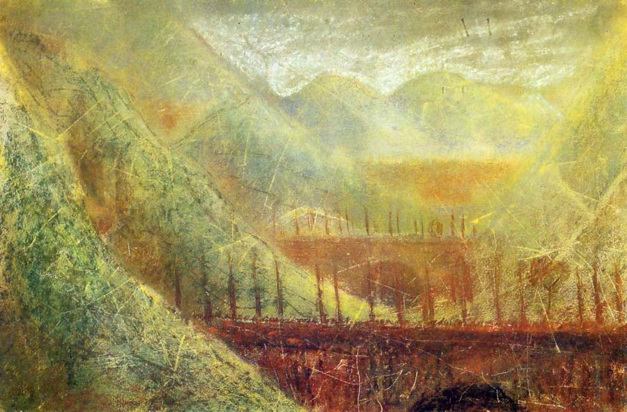
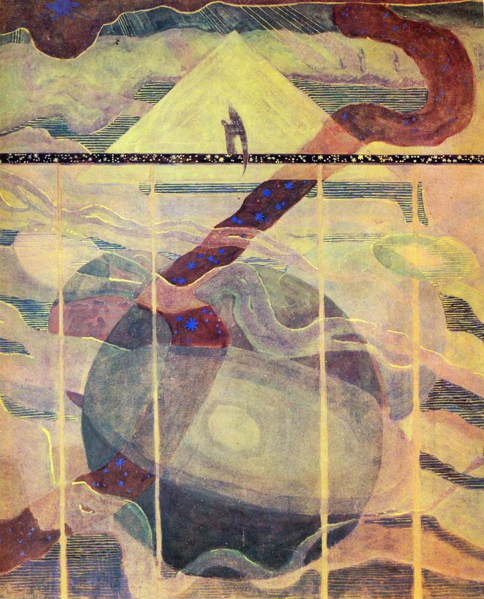
Можно петь о том, как все плохо, грязно и ужасно, и иметь такой социальный пафос. Но реально, это никого не меняет. Может быть, это вызовет реакцию типа: «О, какой честный человек, рубит правду матку, говорит все как есть». И совсем другое, когда вдруг что-то человек подмечает, показывает или говорит то, от чего душа другого человека становится иной, она преображается.
Зачастую образы – лучшее средство передать Ц.Божье. Есть разница, когда мы просто говорим: «Любовь», - и пытаемся ее описать, и тем, когда мы ее чувствуем, что нас действительно любят. Человек говорит тебе: «Я тебя люблю», или человек действительно любит тебя и может быть, даже не говорит ничего. Искусство дает некое прикосновение к этому.
Художник имеет дар или его не имеет. Нет смысла стараться быть художником, не надо к этому стремиться, не надо стараться быть поэтом. Как говорят: «Можешь не писать, - не пиши». Это должно быть дано свыше. Это избрание. Я говорю о том, что действительно не можешь этого не делать. Тебя к этому призывают. Человек избирается для этого, ему это дается.
Если говорить о посвящении художника в том смысле, что человек понимает, что он в Божьих руках есть определенное орудие, для того, чтобы донести что-то, то мне понятно, чему он посвящен. А если его жизнь не целостна, сама разобранная, потерянная, разорванная на куски, и у него просто есть этот дар, который проявляется, я бы не назвал это посвящением, я назвал бы это захваченностью какой-то, одержимостью. Да, может быть так, что человек одержим какими-то вещами. Но это уже не есть сам человек, т.е. это не он живет, это им кто-то живет, через него кто-то живет.
Целостность в человеке приходит только от Бога, она приходит свыше, а сам в себе человек не имеет этой целостности. Если человек открывает для себя нечто большее, чем его собственная жизнь, чем то, что есть в этой реальности, он становится целостным. И тогда этот дар приносит плод.
Надо различать посвящение и посвящение. Быть посвященным процессу, своему собственному дару – это змея, укусившая сама себя за хвост. Другое дело - есть нечто, куда это встраивается, устремляется.
Художник существует для того, чтобы быть посвященным вечности.
Смотрите видео беседы с Романом на эту тему: